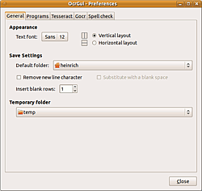
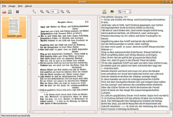
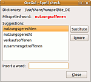

OcrGui
Dieser Artikel wurde für die folgenden Ubuntu-Versionen getestet:
Ubuntu 16.04 Xenial Xerus
Zum Verständnis dieses Artikels sind folgende Seiten hilfreich:
OcrGui  ist ein Programm, mit dem in einer grafischen Oberfläche aus Bildvorlagen eine Texterkennung erzeugt werden kann. Zum Einsatz kommen dazu tesseract-ocr oder GOCR; außerdem kann das Ergebnis mit Hunspell einer Rechtschreibprüfung unterzogen werden. Das Programm wurde in C verfasst, es verwendet GLib- und GTK+-Komponenten. Die Entwicklung von OcrGui stagniert leider (letzte Änderungen von 2011), liefert aber aufgrund der Verwendung von tesseract-ocr gute Ergebnisse. Mit tesseract-ocr 3.0x (Standard ab 12.04 Precise Pangolin) ist in den Texten auch eine Spaltenerkennung möglich.
ist ein Programm, mit dem in einer grafischen Oberfläche aus Bildvorlagen eine Texterkennung erzeugt werden kann. Zum Einsatz kommen dazu tesseract-ocr oder GOCR; außerdem kann das Ergebnis mit Hunspell einer Rechtschreibprüfung unterzogen werden. Das Programm wurde in C verfasst, es verwendet GLib- und GTK+-Komponenten. Die Entwicklung von OcrGui stagniert leider (letzte Änderungen von 2011), liefert aber aufgrund der Verwendung von tesseract-ocr gute Ergebnisse. Mit tesseract-ocr 3.0x (Standard ab 12.04 Precise Pangolin) ist in den Texten auch eine Spaltenerkennung möglich.
Installation¶
Benötigt werden die Pakete[1]
imagemagick
tesseract-ocr (sowie die gewünschten Sprachdateien)
gocr
hunspell (sowie die gewünschten Sprachdateien)
libgtk2.0-dev
libdbus-glib-1-dev
libhunspell-dev
intltool
 mit apturl
mit apturl
Paketliste zum Kopieren:
sudo apt-get install imagemagick tesseract-ocr gocr hunspell libgtk2.0-dev libdbus-glib-1-dev libhunspell-dev intltool
sudo aptitude install imagemagick tesseract-ocr gocr hunspell libgtk2.0-dev libdbus-glib-1-dev libhunspell-dev intltool
Das Programm selbst liegt nicht in den Ubuntu-Quellen oder als .deb vor (es wurde für openSUSE entwickelt); daher muss der Quellcode von sourceforge.net  heruntergeladen und entpackt [2] werden. Ggf. müssen für die Installation mit checkinstall manuell der Pfade /usr/local/share/ocrgui/doc sowie /usr/local/share/icons/hicolor/16x16, 22x22, 32x32, 48x48, scalable angelegt werden[3][4],
heruntergeladen und entpackt [2] werden. Ggf. müssen für die Installation mit checkinstall manuell der Pfade /usr/local/share/ocrgui/doc sowie /usr/local/share/icons/hicolor/16x16, 22x22, 32x32, 48x48, scalable angelegt werden[3][4],
sudo mkdir /usr/local/share/ocrgui/doc ## etc.
weil ansonsten make das Kompilieren abbricht, da diese Ordner standardmäßig nicht existieren und von der Installationsroutine auch nicht angelegt werden. Alternativ kann man auch zunächst sudo make install aufrufen, und danach sudo checkinstall.
Danach kann das Programm normal kompiliert[5] werden. Das Programm wird dann im Terminal gestartet [6]; komfortabler ist es, sich einen Starter anzulegen [7]. 
Konfiguration¶
Über "File -> Preferences" erreicht man das Konfigurationsfenster. Im Reiter "General" werden Einstellungen zur zu verwendenden Schriftart ("Text font") und der Ausrichtung des Hauptfensters vorgenommen. Es lässt sich der Speicherort für die Einstellungen und das Temporärverzeichnis festlegen; außerdem lässt sich einstellen, dass die Umbruchzeichen am Zeilenende entfernt ("Remove new line character"), ggf. durch eine Leerstelle ersetzt werden sollen ("Substitute with a blank space"). Ebenso lässt sich einstellen, ob und wie viele leere Zeilen eingefügt werden sollen.
Unter "Programs" wird angezeigt, ob alle benötigten Programme installiert sind, in "Tesseract" lässt sich die zu verwendende Sprache einstellen (ggf. muss der Pfad zu den Sprachdateien angegeben werden), und festlegen, dass Tesseract als Standard-Anwendung für die Texterkennung genutzt werden soll. Unter "Gocr" lassen sich dezidierte Einstellungen zur Erkennung mit GOCR (Schwellwert, "Schmutz"-Entfernung, Abstand zwischen Wörtern/Buchstaben und Erkennungssicherheit) machen; Details in der GOCR-Dokumentation (Manpage); ebenso lässt sich hier GOCR als Standard-Texterkennung aktivieren. Unter "Spell Check" lässt sich das zu verwendende Wörterbuch auswählen, oder auch selbst ein Pfad zum einzusetzenden Wörterbuchverzeichnis angeben.
Hinweis:
OcrGui lässt sich auch mit tesseract-ocr-3.0x verwenden; die benötigten Sprachdateien <langid>.traineddata-Dateien müssen dazu in /usr/local/share/tessdata vorliegen. Allerdings scheinen nicht alle Sprachversionen erkannt zu werden. Als "Notlösung" kann man zur Nutzung einer nicht erkannten Version der Sprachdatei den Namen einer der erkannten geben... Die Dateien müssen für alle Benutzer lesbar sein, außerdem sollten sie "ausführbar" sein[8]. Das Problem ist ab Version 0.2.2 bereinigt worden.

Bedienung¶
Bilddateien lassen sich über "File -> Open" oder die Ordnerschaltfläche öffnen; OcrGui unterstützt alle gängigen Bildformate (allerdings kein PDF). Die Dokumente werden in der Seitenleiste angezeigt, der Wechsel erfolgt mit Doppel- -Klick auf die jeweils gewünschte Seite (der Wechsel ist allerdings ggf. etwas zäh). Die Texterkennung wird über die Taste mit dem "Bild-zu-A" gestartet, sie erfolgt für jede Seite einzeln (eine Stapelverarbeitung ist nicht vorgesehen). Die Lupentasten daneben dienen zum Zoomen des Bildes im linken Teil des Hauptfensters. Der erkannte Text lässt sich über die Speichertaste abspeichern; dabei ist der ToolTip "Save more text in the same file" etwas irreführend, da nicht, wie es ggf. sinnvoll wäre, Text an eine bestehende Datei angehängt werden kann, sondern der Text verschiedener Dokumente gemeinsam abgespeichert wird. Die Dokumente müssen dazu in der Seitenleiste markiert werden (mehrere lassen sich über
Strg + auswählen). Allerdings wird der Text in der falschen Reihenfolge erfasst, d.h. der Text des untersten Dokumentes zuerst, der des obersten zuletzt. Die Dokumente lassen sich leider nicht verschieben, sodass bei mehrseitigen Dokumenten schon beim Aufruf auf die "falsche" Reihenfolge geachtet werden muss.
-Klick auf die jeweils gewünschte Seite (der Wechsel ist allerdings ggf. etwas zäh). Die Texterkennung wird über die Taste mit dem "Bild-zu-A" gestartet, sie erfolgt für jede Seite einzeln (eine Stapelverarbeitung ist nicht vorgesehen). Die Lupentasten daneben dienen zum Zoomen des Bildes im linken Teil des Hauptfensters. Der erkannte Text lässt sich über die Speichertaste abspeichern; dabei ist der ToolTip "Save more text in the same file" etwas irreführend, da nicht, wie es ggf. sinnvoll wäre, Text an eine bestehende Datei angehängt werden kann, sondern der Text verschiedener Dokumente gemeinsam abgespeichert wird. Die Dokumente müssen dazu in der Seitenleiste markiert werden (mehrere lassen sich über
Strg + auswählen). Allerdings wird der Text in der falschen Reihenfolge erfasst, d.h. der Text des untersten Dokumentes zuerst, der des obersten zuletzt. Die Dokumente lassen sich leider nicht verschieben, sodass bei mehrseitigen Dokumenten schon beim Aufruf auf die "falsche" Reihenfolge geachtet werden muss.
 Die Texterkennung wird im rechten Teil angezeigt, die Tasten darüber dienen der Bearbeitung des Textes. Mit der Speicher-Taste wird der momentan angezeigte Text abgespeichert. Die ABC-Taste daneben (ToolTip "Spell check with hunspell") bewirkt ein Unterstreichen unbekannter Wörter im Editorfenster und öffnet ein Korrekturfenster, in dem für unbekannte Wörter Korrekturvorschläge gemacht werden. Es kann auch eine eigene Schreibweise angegeben werden ("Insert a word") und über die Schaltfläche "Sustitute" (falsche Schreibung im Programm selbst) eingefügt werden.
Die weitere "abc"-Taste dient dazu, die Schriftart im Editor-Fenster anzupassen, daneben lässt sich die Größe einstellen. Diese Angaben haben aber keinen Einfluss auf die eigentliche Ausgabe; diese erfolgt bei tesseract-ocr in reinem Text-Format.
Eine ausführliche bebilderte Anleitung kann ab 0.2.2 über "Help -> Contents" (oder F1 ) im Browser aufgerufen werden, sie findet sich in usr/share/doc/ocrgui/doc/ocrgui_manual.html.
Tastenkürzel¶
| OcrGui | ||
| Tasten | Funktion | Übersetzung |
| Strg + O | "File -> Open" | Datei öffnen |
| Strg + W | "File -> Close" | Datei schließen |
| Strg + Q | "File -> Quit" | Programm beenden |
| Strg + R | "Image -> Recognition" | Texterkennung starten |
| Strg + + | "Image -> Zoom in" | Vergrößern |
| Strg + - | "Image -> Zoom out" | Verkleinern |
| Strg + 0 | "Image -> Normal size" | Originalgröße anzeigen |
| Strg + S | "Text -> Save" | Text speichern |
| Strg + M | "Text -> Save multiple text" | Text mehrerer Seiten speichern |
| Strg + P | "Text -> Spell check" | Rechtschreibung überprüfen |
| F1 | "Help -> Contents" | Anleitung im Browser öffnen |
Alternativen¶
xsane2tess, xsane2cunei zur Texterkennung direkt aus XSane (auch für mehrseitige Dokumente)
vietOCR - vergleichbares Programm ebenfalls auf tesseract-ocr-Basis, ab Version 1.9 auch mit Rechtschreibprüfung
YAGF - umfangreiches Frontend für Cuneiform-Linux mit Scanner-Integration via XSane; ebenfalls mit Korrekturfunktion
cuneiform-qt - vergleichbares einfacheres Programm, das ebenfalls auf Cuneiform-Linux als OCR-Engine zurückgreift
- Erstellt mit Inyoka
-
 2004 – 2017 ubuntuusers.de • Einige Rechte vorbehalten
2004 – 2017 ubuntuusers.de • Einige Rechte vorbehalten
Lizenz • Kontakt • Datenschutz • Impressum • Serverstatus -
Serverhousing gespendet von